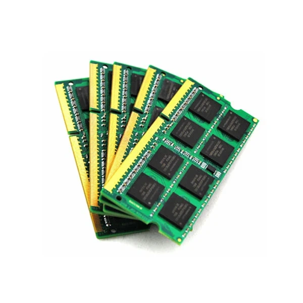
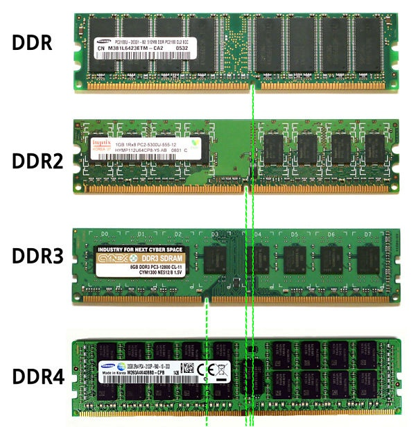

Оперативната памет (ОП), известна като RAM (Random Access Memory), е памет с произволен достъп и е жизненоважна за бързото действие на системата. Предназначение: Тя съхранява програмния код на работещите в момента приложения и данните, които процесорът обработва в реално време. Енергозависимост: RAM е временна (енергозависима) памет. При спиране на захранването или рестартиране информацията в нея се изтрива напълно. Устройство и мерни единици: Състои се от полупроводникови чипове (банки), разположени на платки. Най-малката единица за измерване е бит (стойност 0 или 1), а група от 8 бита образува 1 байт (byte). Основни характеристики: Големина (капацитет): Обем данни, който може да събере (измерва се в GB). Скорост на обмен (честота): Времето за четене и запис. Производителност: Брой прочетени или записани байтове за секунда. |
  |